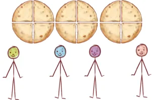
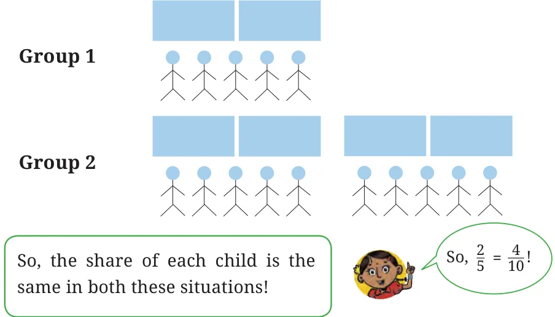
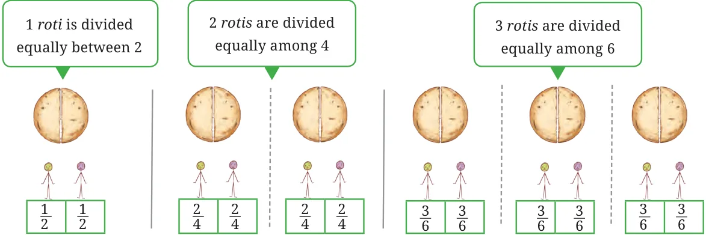
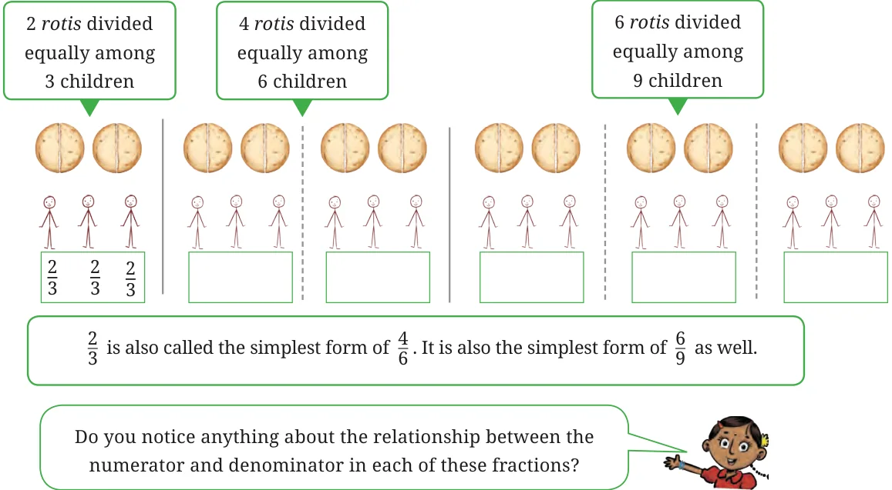

- Three rotis are shared equally by four children. Show the division in the picture and write a fraction for how much each child gets. Also, write the corresponding division facts, addition facts, and, multiplication facts.

Fraction of roti each child gets is \(\underline{\qquad}\).
Division fact:
Addition fact:
Multiplication fact:
Compare your picture and answers with your classmates!
- Draw a picture to show how much each child gets when 2 rotis are shared equally by 4 children. Also, write the corresponding division facts, addition facts, and multiplication facts.
- Anil was in a group where 2 cakes were divided equally among 5 children. How much cake would Anil get?
Now, if there are 10 children in my group, how many cakes will I need so that they get same amount of cake as Anil?
What if we put two such groups together? One group where 2 cakes are divided equally between 5 children, and another group again with 4 cakes and 10 children.

Let us examine the shares of each child in the following situations.
- 1 roti is divided equally between 2 children.
- 2 rotis are divided equally among 4 children.
- 3 rotis are divided equally among 6 children.
Let us draw and share!
Did you notice that in each situation the share of every child is the same? So, we can say that \(\frac{1}{2} = \frac{2}{4} = \frac{3}{6}\).

So, \(\frac{1}{2}\), \(\frac{2}{4}\), and \(\frac{3}{6}\) are all equivalent fractions.
Find some more fractions equivalent to \(\frac{1}{2}\). Write them in the boxes here:
Equally divide the rotis in the situations shown below and write down the share of each child. Are the shares in each of these cases the same? Why?
